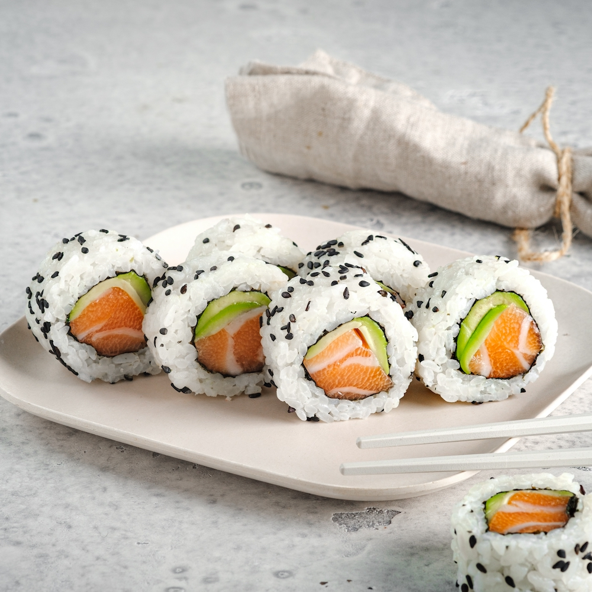

Home
Sushi

Description
A California roll with salmon is a sushi variation, specifically an uramaki (rice on the outside),
made with
rice, nori seaweed, cucumber, avocado, and salmon, often topped with sesame seeds.
Ingredients:
For the rice:
- 2 cups sushi rice (or short-grain rice)
- 2 cups water
- 1/4 cup rice vinegar
- 2 tbsp sugar
- 1 tsp salt
For the filling:
- 200g fresh salmon (sliced into thin strips)
- 1 ripe avocado (sliced)
- 1 cucumber (seeds removed, cut into matchsticks)
- 1/2 cup imitation crab meat (shredded)
- 1 tbsp Japanese mayonnaise (or regular mayo)
- Toasted sesame seeds (optional, for garnish)
Step-by-Step:
-
Prepare the rice:
-
Rinse rice until water runs clear. Cook with water (use rice cooker or simmer covered for 15 mins).
-
Heat vinegar, sugar, and salt until dissolved. Fold into cooked rice (don’t smash it) and let cool.
-
Mix the filling:
- In a bowl, combine imitation crab with mayo. Set aside.
-
Assemble the roll (Uramaki style):
- Place plastic wrap on the bamboo mat. Put half a nori sheet (rough side up).
- Spread rice thinly, leaving 1cm empty at the top edge.
- Flip nori (rice side down). Add salmon, avocado, cucumber, and crab mix in the center.
- Roll tightly using the mat, pressing to compact.